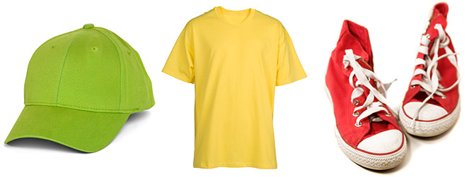
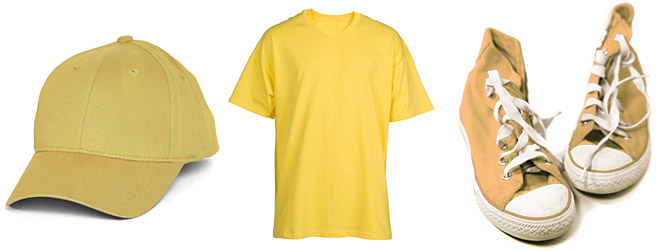

Hearing impairment implies a total or partial loss of the ability to perceive acoustic information. The impairment may affect the full range of hearing, or be limited to only parts of the auditory spectrum, which for speech perception is the region between 250 and 4000 Hz (see Figure 3.x in chapter 3).
The term deaf is used to describe people with profound hearing losses while hard of hearing is used for those with mild to severe hearing losses. Hearing loss is expressed in decibel (Db) relative to an audiometric cero which is a standardized normal threshold of hearing. Deafness is usually defined as an average hearing loss of more than 92 Db in the speech area. A person with a hearing loss of 70-90 Db is severely hard of hearing. A person with a hearing loss of 50-60 Db is considered moderately hard of hearing (Davis, 1970). Measured losses of less than 20 Db is considered normal acuity.
The onset of the hearing impairment is important for language development and for identification with the deaf community. A person who was born profoundly deaf or has become deaf at a very early age, i.e. prelingual deafness, is dependent mainly on visual communication for speech and language development, and often uses sign language. A person who becomes deaf later in life usually has a good mastery of both spoken and written language before the onset of deafness. Some deaf people may fall between these two groups. For example, they may become deaf at an early age, but after they have learned to speak, say at 3-4 years of age, and therefore may not have a full mastery of spoken or written language.
For a discussion of telecommunication devices, it is useful to distinguish between deaf people with and without intelligible speech; and between those who can and those who cannot understand speech with amplification. Although some people with prelingual deafness have intelligible speech, this is more typical of those deaf persons who acquired speech and language skills before the onset of the hearing impairment. For people with profound deafness, speech discrimination may be very limited without lip-reading even when they can hear some sound with the help of a hearing aid.
Written text is closely related to spoken language, and the function of writing is to mirror speech (Saussure, 1916). Thus, although mastery of spoken language may not be a prerequisite for learning to read, it greatly facilitates the acquisition of reading and writing. Thus, due to the limited knowledge of spoken language, the written language skills of many prelingually deaf people may often be limited as well (cf., Conrad, 1979).
Post-lingually deafened people usually have intelligible speech, but because they cannot hear their own voice, their control of volume may be erratic, and they may therefore speak too softly or too loudly. While they typically have no special problems in the use of written language for, if their hearing impairment was acquired in childhood, vocabulary and other aspects of both spoken and written language use may be adversary influenced, due to more limited experience with spoken language.
People of any age may have a mild to severe hearing loss, but the majority will be elderly. For people who are hard of hearing, speech and hearing remain the main mode of communication, often with the help of a hearing aid. In the case of a severe hearing impairment, however, the person may be dependent on lip reading in addition to using a hearing aid, and for some types of hearing impairment, a hearing aid is of limited help. Furthermore, although many hard-of-hearing people hear speech with the help of amplification, their ability to understand speech may be hindered due to the effect of hearing loss. The ability to hear is not necessarily equal with the ability to understand what is said
Visual impairment
In medical terms, visual impairment can be defined as a total loss of, or reduced ability to, perceive light and colour. The classic definition of blindness is a visual acuity of 6/60 or less in the better eye with optimum correction, or visual acuity of better than 6/60 if the widest diameter of field of vision subtends an angle no larger than 20 degrees. This means that a blind person must be at 6 metres in order to see something that a person with normal sight can see at 60 metres, or that the field of vision is so restricted that only a very limited area can be seen at one time (see Figure 5.2). Within this legal definition, a wide variety of visual impairments can be found. Bauman (1969) distinguishes between a visual impairment where vision is of no practical use in a testing or working situation; a visual impairment where vision is of some help in a testing or working situation, but where effective reading of even moderately enlarged print is not possible, and a visual impairment where print may be used effectively, although it may have to be large type, held very close to the eyes, or used with special visual aids and under special lighting conditions.
Blindness implies a total or near total loss of the ability to perceive form. Partial sight implies an ability to utilize some aspects of visual perception, but with a great dependency on information from other modalities, in particular touch and hearing. Reduced vision may handicap a person in situations which put great demands on the use of vision, but in most situations the person will not be handicapped by the visual impairment; they will, for example, be able to read large type print with glasses.
The incidence of all kind of visual impairment increases considerably with age. Less than 10 percent of blind people are under 20 years of age while nearly 50 percent are 65 years or older (Bauman, 1969). In addition, people older than 40 need higher light intensity and contrast than 20-year-olds, and the difference increases dramatically between age 40 and 60.
Problems with orientation and mobility are one of the typical consequences of failing sight. In the case of elderly people, difficulties in orientation and mobility may be intensified by other cognitive impairments
Deuteranomaly is “green-weak” color vision, the most common form of so-called colorblindness. It afflicts about 5% of the male population and is caused
you did'nt see the number 74 in images,then accept color problem by checking box?

- Deuteranomally(Red-Green)
Protanomaly is referred to as "red-weakness", an apt description of this form of color deficiency. Any redness seen in a color by a normal observer is seen more weakly by the protanomalous viewer, both in terms of its "coloring power" (saturation, or depth of color) and its brightness. Red, orange, yellow, and yellow-green appear somewhat shifted in hue ("hue" is just another word for "color") towards green, and all appear paler than they do to the normal observer. The redness component that a normal observer sees in a violet or lavender color is so weakened for the protanomalous observer that he may fail to detect it, and therefore sees only the blue component. Hence, to him the color that normals call "violet" may look only like another shade of blue.


Above two images seems to be same color?
- Protanomly(red-green)
Deuteranopia is the most common forms of color-blindness. People with these conditions have cones that are insensitive to medium wavelengths (greens), but the end result is similar to protanopia, with the exception that reds do not look as dark.

Above two images seems to be same color?
- Deuteranopia(green)
The color receptors (cones) in the eyes of people with protanopia are not sensitive to long wavelengths (the reds). Reds look more like beiges and appear to be somewhat darker than they actually are. The greens tend to look similar to the reds. Protanomaly is milder than protanopia, but the end result is similar. Although many people with protanomaly can distinguish some reds and greens, they cannot do so as easily as someone with color-normal vision, and, as with protanopia, reds tend to look darker as well.

Above two images seems to be same color?
- protanopia(Red)
Tritanopia is much less common than the other categories mentioned above.Tritanopia is the insensitivity to short wavelengths (the blues). In general blues and greens can be confused, but yellows are also affected in that they can seem to disappear or appear as lighter shades of red.


Above two images seems to be same color?
- Tritanopia(Blue)
Colors as they look to a person with normal color perception. Colors as they look to a person with color blindness.Normal vision vs. colorblind vision.


The term "color blindness" is misleading, because most "colorblind" people see colors, but their color perception is limited and inaccurate. The most common form of color vision deficiency causes inaccurate perception of the colors red and green, making it easy to confuse them.
Above two images seems to be same color?
I have Color blindness problem
What is cognitive impairment?
Cognitive impairment occurs when problems with thought processes occur. It can include loss of higher reasoning, forgetfulness, learning disabilities, concentration difficulties, decreased intelligence, and other reductions in mental functions. Cognitive impairment may be present at birth or can occur at any point in a person’s lifespan.
Some early causes of cognitive impairment include chromosome abnormalities and genetic syndromes, malnutrition, prenatal drug exposure, poisoning due to lead or other heavy metals, hypoglycemia (low blood sugar), neonatal jaundice (high bilirubin levels developing after birth), hypothyroidism (underactive thyroid), complications of prematurity, trauma or child abuse such as shaken baby syndrome, or oxygen deprivation in the womb or during or after birth.
Cognitive impairment that develops in childhood or adolescence can result from many conditions. Examples include side effects of cancer therapy, malnutrition, heavy metal poisoning, autism (abnormal development of communication and social skills), metabolic conditions, and systemic lupus erythematosus (disorder in which the body attacks its own healthy cells and tissues).
With age, other conditions such as stroke, dementia, delirium, brain tumors, chronic alcohol use or abuse, substance abuse, some vitamin deficiencies, and some chronic diseases may cause cognitive impairment. Head injury and infection of the brain or of the covering of the brain and spinal cord (meninges) can cause cognitive impairment at any age